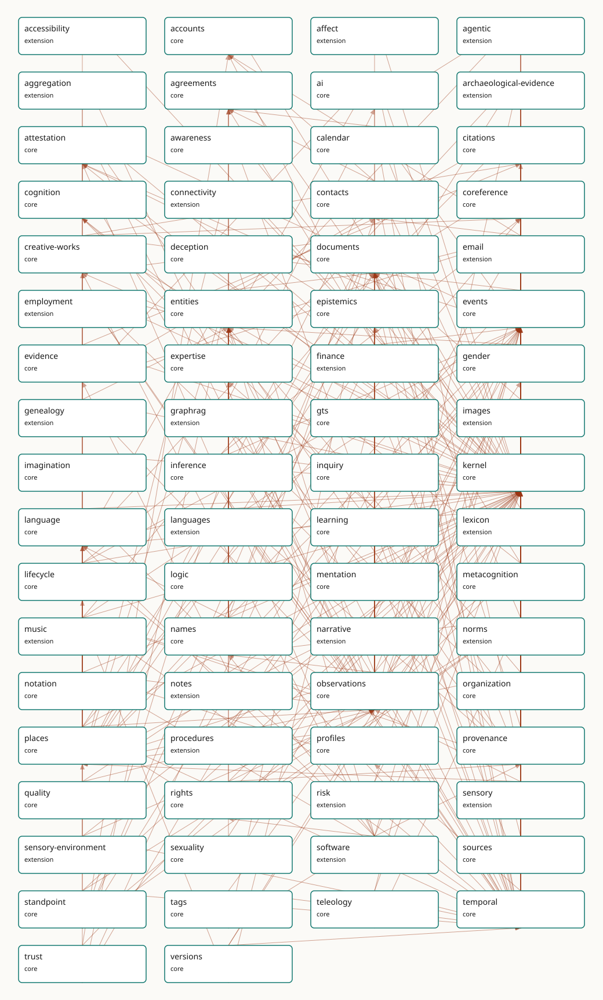

Slices
Each slice is a self-contained ontology unit. The manifest is the sole source of identity, tier, dependencies, profiles, and consumers.

| Slice | Tier | Profiles | Dependencies | Consumers |
|---|---|---|---|---|
| accessibility | extension | - | kernel, places | Accessibility facets over places and routes; the schema.org accessibility projection. |
| accounts | core | - | kernel | Online accounts for the mail corpus, email delivery, and finance. |
| affect | extension | narrative | kernel, observations | The lbox principia importer (affect/aesthetic annotations) and the narrative narrative arc samples (sampleState draws on EmotionType by soft reference, never dependency). DELIBERATELY THIN (P15): growth requires a new consumer; the size budget and expansion bar are recorded in docs.md. |
| agentic | extension | - | ai, entities, kernel, provenance, sources, temporal | Project Lillith's agentic mode (P15): tool-call trajectories audited in the same provenance graph as the agent's claims. First live producer: the gmeow memory MCP triad records its own store/revise calls as ToolCall provenance. DELIBERATELY THIN: growth requires a new consumer; the size budget is recorded in docs.md. |
| aggregation | extension | - | observations, places | Spatial aggregation (count, density, k-anonymity) in the solver layer over places. |
| agreements | core | - | kernel, names | Licences-as-agreements (rights), employment terms, and calendar RSVPs. |
| ai | core | - | entities, evidence, kernel, observations, provenance | The flagship (P14): the gmeow PyPI client's Memory store, the MCP store/recall/revise triad, the hallucination-resistant KG pattern + gmeow audit (EvidenceSpan audit machinery), the claim-extraction eval suite, and Project Lillith via extensions/graphrag. |
| archaeological-evidence | extension | - | events, kernel, language, observations, places, temporal | Inscription readings and find contexts; the languages stress corpus. |
| attestation | core | - | events, kernel, observations, provenance, trust | Signed-claim envelopes for trust, software releases (SLSA/Sigstore), and GTS COSE signing. |
| awareness | core | claims, memory | kernel, temporal | AI operational-state provenance and human consciousness modelling (Principle 15) — a stored claim can record the operational state of the experiencer that formed it: was it formed during gmeow:modeOnlineInference (live serving) versus gmeow:modeOfflineReplay (offline rumination over logged context) or gmeow:modeTraining, and at what sampling regime (gmeow:awarenessScalar)? The human face models consciousness, sleep staging, meditation, and clinical arousal (gmeow:levelObtunded / gmeow:levelUnresponsive mapping to the Glasgow Coma Scale by reference); a gmeow:AwarenessTenure pins each state to a temporal interval (temporal slice). Dreaming and lucidity compose here by reference: gmeow:modeLucidDreaming is gmeow:modeDreaming with metacognition (gmeow:MetacognitiveState) online, documented at the seam, never re-minted. |
| calendar | core | - | agreements, events, kernel, temporal | Scheduling atop events: the mail corpus's invitations (mail-corpus invitation consumer), the >25%-usage floor (named in slice-dependency doctrine). |
| citations | core | claims, memory | documents, evidence, kernel | The citation/credit dogfood (source/claim refactor): CITATION.cff and slice-manifest credit projection, CrossRef and CiTO/CRediT/PROV-O/PAV alignment by reference, genealogical evidence links (CitationAct via a Selector), and scholarly citation graphs. |
| cognition | core | - | kernel, temporal | The transpiler's expertise up-projection: schema:knowsAbout lifts to the asserted gmeow:knowsAbout level of the knowledge spectrum, preserving the QID-anchored subject (the agent-memory flagship records what an agent knows across sessions — Principle 14). The reified tier — gmeow:KnowledgeProficiency (a gufo:Relator mirroring SkillProficiency) over the gmeow:KnowledgeLevel ordinal axis, grounded in the gmeow:CognitiveState mode under the kernel gmeow:MentalMoment umbrella — lets the flagship record graded, scaled, time-scoped, standpoint-indexed knowing; attention, interest, and objectual memory-of round it out. Belief/justification epistemics land in the sibling epistemics slice. |
| connectivity | extension | - | kernel, places | Network/route topology for places and the virtual-location realm. |
| contacts | core | - | accounts, agreements, kernel, observations, places, temporal | The mail corpus's address book; email-address structure (core half of the email split). |
| coreference | core | memory | documents, kernel | Authority links from every slice to Wikidata and registries (P5, never owl:sameAs). |
| creative-works | core | - | citations, coreference, documents, kernel | The foundational WEMI 4-tier spine (Work/Expression/Manifestation/Item) plus the universal Contribution and CreativeDerivation relators, consumed by the documents, software-products, citations, narrative, and music slices; projects to FRBR/LRMoo/CIDOC/schema.org by reference (Principle 5). |
| deception | core | - | attestation, epistemics, events, kernel, observations | Graph-native epistemics of the lie (P16: core by commitment); the claim layer's refutations. |
| documents | core | - | creative-works, kernel, names, observations, places, standpoint, tags | Creative-works manifestations, the mail corpus attachments, depictions of any entity. |
| extension | - | accounts, contacts, documents, entities, events, kernel, temporal, trust | The mail corpus: the dogfooded message model over core contacts/accounts. | |
| employment | extension | - | entities, kernel, observations, organization, temporal | CV/employment claims over organization and agreements; the mail corpus's signatures. |
| entities | core | - | contacts, documents, kernel, language, names, places, trust | Every slice describing people, organizations, or things; the mail corpus; the identity facets. |
| epistemics | core | - | attestation, evidence, inference, kernel, observations, standpoint, temporal | The agent-memory flagship store_claim / recall MCP surface (Principle 14): an LLM output is a held attitude toward a proposition, recorded via the flat doxastic spine; the keystone knowsThat subPropertyOf believes materialises belief from any knowledge claim. The reified tier (DoxasticState, credence, doxasticClaim, DoxasticTenure) lives in this slice, reusing temporal:TimeScopedRelation/duringInterval and standpoint:StandpointClaim/claimModality. The lightweight gmeow:justifiedBy hook points a DoxasticState at EvidenceSpan, Attestation, or DoxasticState justifiers; full inferential argumentation remains in the sibling justification child. |
| events | core | memory | documents, kernel, observations, places, provenance, temporal | Participation and life events across slices; the calendar slice; provenance activities. |
| evidence | core | claims, memory | citations, kernel | The claim spine's EvidenceSpan (EvidenceSpan audit machinery); evidential warrant for citations and deception analyses. |
| expertise | core | - | cognition, entities, kernel, organization, temporal | Cross-cutting proficiency claims (promoted core, slice-dependency doctrine): skills, credentials, language proficiency. |
| finance | extension | - | accounts, agreements, documents, events, kernel, observations, places, temporal, trust | Accounts, transactions, REA double-entry over core MonetaryAmount; FIBO alignment. |
| gender | core | - | entities, kernel, names, observations, sexuality | Identity facets on persons (P16: core by commitment); the 7-axis orthogonality matrix. |
| genealogy | extension | - | entities, kernel, observations | Kin relationships for the family-history use of the mail corpus; GEDCOM alignment. |
| graphrag | extension | - | ai, entities, kernel, observations, provenance | Project Lillith — a GraphRAG deployment whose corpus, embeddings, indexes, retrievals, and derived entity graph must be auditable provenance, not pipeline internals (P15). |
| gts | core | - | attestation, creative-works, kernel, provenance, versions | Describing and dogfooding GTS transport artifacts: packages, segments, profiles, chain heads, opaque frames, codecs, and compaction lineage (GTS transport design, docs/GTS-SPEC.md). |
| images | extension | - | documents, kernel, observations, temporal | High-fidelity depiction (regions, scene graphs) atop core MediaObject; the gmeow-image CLI (CLI roll-up design). |
| imagination | core | claims, memory | kernel | Reality-monitoring for the agent-memory flagship (Principle 14) — store_claim records a gmeow:contentOrigin (gmeow:originPerceived / originRemembered / originBelieved / originImagined / originSupposed / originGenerated) so recall can tell a recalled fact from a confabulated or LLM-generated one, gmeow:originGenerated being the disciplined hallucination/provenance marker; counterfactual rehearsal and planning rollouts entertain content with gmeow:imagines / gmeow:supposes against an imagined gmeow:imaginedWorld (logic:, by reference); fiction and narrative interiority are shared licensed imagining bridging gmeow:veridicalityLicensedFalsehood (deception); abduction entertains candidate explanations as suppositions before any are believed. |
| inference | core | claims, memory | events, kernel, mentation, observations, standpoint, temporal | The agent-memory flagship — an LLM stating HOW it reached a claim (deduced / generalized / best-explanation / by-analogy) with its premises, warrant, and defeasibility, then revising belief by suppression rather than deletion. store_claim records gmeow:inferredFrom + gmeow:inferenceMode on the claim; recall returns the premises and warrant; the belief-revision audit (a fired defeater closes a gmeow:InferenceTenure and sets the conclusion-claim gmeow:displayable false while retaining the gmeow:InferenceCommitment) is the headline demonstration. |
| inquiry | core | claims, memory | epistemics, kernel, observations, standpoint, temporal | Agent memory of open problems / what it is trying to find out (Principle 14); recall surfaces open inquiries; abduction answers typeWhy questions; the metacognition slice's known-unknowns mint Questions; loaded-question detection bridges the deception slice. |
| kernel | core | - | - | Every slice: the gUFO-grounded kernel (Entity, Agent, InformationObject, base relations). |
| language | core | - | kernel, names | Every language-tagged literal (private-use-language-tag); names' romanizations; software's languages (P16 slim core). |
| languages | extension | - | expertise, kernel, language, observations, provenance, temporal | Rich sociolinguistics (proficiency, scripts, varieties, diachrony) extending the core language slim slice. |
| learning | core | memory | cognition, events, expertise, kernel, mentation, sources, temporal | How agent memory GROWS (Principle 14): when, from whom, and how an agent came to know something — the GTS ai-package belief-acquisition log. A gmeow:LearningEvent records the transition that raised a gmeow:KnowledgeProficiency or gmeow:SkillProficiency; gmeow:learnedFrom carries the provenance of acquired knowledge; pedagogy and rubric consumers (the teleology / rubrics slices) read gmeow:Teaching. Forgetting is suppression (cognition's gmeow:remembers + gmeow:displayable false), referenced here, never re-minted. |
| lexicon | extension | - | documents, kernel, language, observations, temporal | Lexical items and attestations for the language family; archaeological readings. |
| lifecycle | core | - | coreference, events, kernel, temporal | Birth/death and existence events for persons and places across the corpus. |
| logic | core | - | - | The reasoning layer and every projection consumer: the native logic: solver is the reasoning authority, and OWL/Datalog/SHACL/Prolog/N3 reasoners consume generated views of it (Principle 17). Foundational by Principle 15: it serves every consumer by construction. The foundation vocabulary is now minted; the solver and generators are deferred to later rungs of the logic roadmap. |
| mentation | core | - | events, kernel, observations, temporal | The agent-memory timeline — a unified, queryable record of an agent's mental life as it unfolds; the single occurrent substrate that inference, learning, imagination, and dreaming specialise or compose over. |
| metacognition | core | claims, memory | cognition, epistemics, events, kernel, observations, standpoint | AI-memory calibration and trustworthiness (Principle 15) — flagging 'I might be wrong', surfacing known-unknowns as inquiries (the inquiry-slice gmeow:evokes bridge), recording the boundary of the agent's knowledge, and defeating one's own inference on reflection; the headline trustworthy-agent demo that separates a calibrated agent from a confabulating one. |
| music | extension | music | creative-works, documents, events, kernel, language, notation, observations, places, provenance, standpoint, temporal, versions | The GTS music-package single-file format, the MCP analysis-claims surface, and the 19-case stress corpus that closes the music design. |
| names | core | memory | agreements, contacts, entities, events, kernel, language, observations, places, temporal | Every named entity across the ontology (P9 anti-colonial, co-equal naming); the mail corpus and contact graph; FOAF / schema.org / Wikidata name exports (via gmeow:hasName); gazetteer and place-naming projections; display-safety / deadname-suppression projections (gmeow:displayable false); and persona-expression register reuse (norms slice) through the gmeow:Register umbrella. |
| narrative | extension | narrative | documents, events, kernel, observations, places, provenance | Narrative frames and myth tellings for the deception slice's worked examples and creative works. The narrative interior (arc samples as Observations over narrative positions, scoped roles, and motifs riding the narration seam) serves the lbox foundation-docs importer (design context: 16,445 arc samples, 779 role links, 16,002 tags / 669 concepts) ahead of the narrative consumer child. |
| norms | extension | narrative | citations, documents, events, kernel, names, observations, rights, standpoint, teleology, temporal | The lbox principia importer (4-tier authority hierarchy, special-directive triggers, paradigm precedence) and policy import/export (ODRL round-trip; OPA/Rego, Cedar, XACML down-projection — deferred to the compiler-arc window with the alignment set). The rubrics facility lives in this slice (Rubric ⊑ Norm; the P16 DAG rule bars extension→extension dependencies): consumers are the lm-eval-harness task projection, the principia RLAIF axes/score-anchor import, and LLM-judge score ingestion as vantage-indexed Assessments. The registers & personas facility also lives here (expressesNorm → Norm, activatedIn → Condition; same P16 DAG rationale): consumers are system-prompt assembly (Persona × Norms × StyleGuide — the projection that replaces principia.yaml's Jinja2 role, deferred to the compiler-arc window with the alignment set) and the principia persona_modes/paradigm-activation import. |
| notation | core | - | kernel, language, observations, profiles, temporal | Symbolic/notation systems for the language family and the music slice's lossy notation projections. |
| notes | extension | - | evidence, kernel | PKM annotations (annotation target span) over core evidence spans; Web Annotation projection. |
| observations | core | claims, memory | entities, events, kernel, names, places, temporal | The unified observation stance: every measured, claimed, or sensed value in any slice; the claim layer (GraphRAG provenance design). |
| organization | core | - | entities, events, kernel, places | Employers, publishers, registrars across slices; posts and roles; the W3C-ORG projection. |
| places | core | memory | coreference, documents, kernel, lifecycle, observations, rights, temporal | Every located fact: contacts, events, the mail corpus, jurisdiction tenures; the GeoSPARQL projection. |
| procedures | extension | - | events, kernel | The universal process/procedure/plan generalization for workflows and recipes. |
| profiles | core | - | kernel, places, temporal | The Profile pattern under every reference frame: temporal, spatial, currency, and tuning frames (pitch frames). |
| provenance | core | claims, memory | documents, events, kernel | Every attributed fact (P9): statement-layer attribution and confidence, import activities and their transaction time, derivation/generation lineage, and GTS chain-of-custody. |
| quality | core | - | kernel, observations | Data-quality claims (DQV/ISO 19157) over any slice's instance data; the coverage gates. |
| rights | core | - | agreements, kernel, observations, provenance | Licensing and rights of every artifact across the ontology: GMEOW's own dual licence, the Images super-ontology, software (SPDX / SBOM exports via gmeow:spdxLicenseId), and the mail corpus; the Employment / publication block; generated machine-readable projections (queries/projections/odrl.rq, cc.rq, schema-org.rq) for ODRL policies, CC REL licences, and the schema.org rights cluster; public-facing licence, copyright-notice, attribution, and trademark surfaces (schema.org JSON-LD, Wikidata); and the privacy / consent / redaction facility driving disclosure control over personal data. |
| risk | extension | narrative | events, kernel | The lbox principia importer (failure_cascades — Trust Collapse and five siblings as named, graded, type-level chains) and threat-model worked examples (D3FEND countermeasures ↔ Mitigation; bowtie barriers ↔ mitigationCounters on CausalLinks). The norms and procedures extensions plug in through Mitigation's deliberately open measure range — no extension→extension dependency exists or may exist (P16 DAG rule). |
| sensory | extension | - | kernel, observations, places | Sensory perception observations (the unified stance applied to senses). |
| sensory-environment | extension | - | kernel, observations, places, temporal | Environmental sensing context for sensory observations. |
| sexuality | core | - | entities, gender | Identity facets on persons (P16: core by commitment); the 7-axis orthogonality matrix. |
| software | extension | - | attestation, creative-works, entities, events, kernel, language, names, provenance, rights, tags | The five-facet software model (five-facet software model): git-as-provenance, verifiable releases, this repo itself. |
| sources | core | claims, memory | documents | Content-addressed sources under the claim spine and the GTS packages (blake3 digests). |
| standpoint | core | claims, memory | kernel, observations, temporal | Every contested fact and every model disagreement (P9); the statement layer; the deception slice. |
| tags | core | memory | kernel, temporal | Folksonomy tagging reused by images and software (forced core by dual extension use). |
| teleology | core | - | events, kernel, temporal | The agent-memory flagship (an agent recording its own goals across sessions — Principle 14) and the lbox principia importer (a 21-goal hierarchy with counter-goals and tier tenure). The norms extension ranges prescribedConduct over Goal. |
| temporal | core | memory | kernel, profiles | Every slice carrying time-scoped facts (tenures, residences, validity); the statement layer's validFrom/validUntil; the calendar slice; the mail corpus. |
| trust | core | - | accounts, kernel | Keys, certifications, and cryptographic signatures used by email wire-auth and attestation. |
| versions | core | - | kernel, observations, temporal | Version lineage for software, languages, creative works, and the ontology's own releases. |